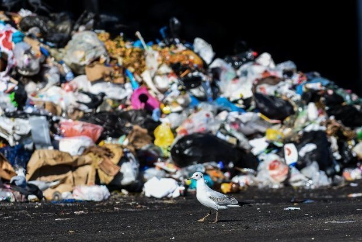
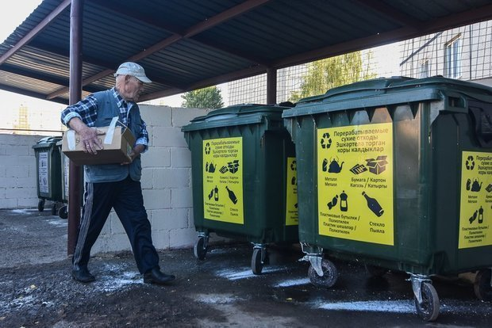
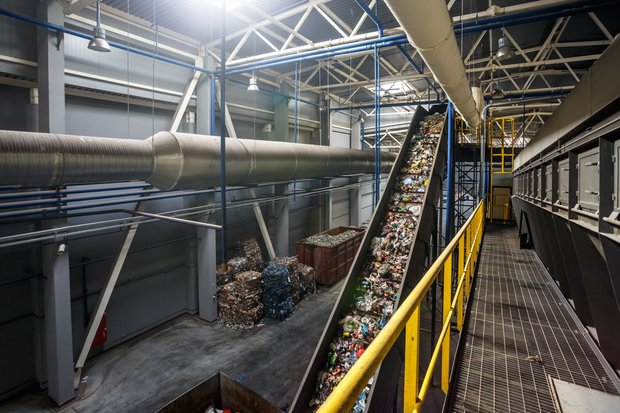

The waste recycling industry in Europe is experiencing a construction boom: now 30 "Energy from Waste" plants are being built on the territory of the EU at once, which should at least partially cover the existing capacity deficit. It is noteworthy that the grate technology will be used at all processing plants.
Capacity shortage
The EU countries found themselves in a difficult situation: on the one hand, they are under pressure from the directive, according to which by 2035 they will be able to bury no more than 10% of municipal waste, and on the other — disappointing forecasts, according to which by 2035 Europe will produce 142 million tons of mixed waste per year.
To understand: now the total capacity of European plants producing energy from waste is about 90 million tons per year. 11 million tons are burned. Europe is trying to cover the capacity deficit of 41 million tons by launching three dozen Waste Energy plants at once, which we will describe in detail below.
In general, the experience of the leading countries in the field of municipal waste management in Europe, as well as Japan and the USA shows that the optimal way to get rid of garbage today is a combination of recycling what is recyclable and incineration of everything else. Burials, especially in uncontrolled landfills, are the lot of lagging countries.
As the analytical service of Real Time found out , as of 2018, 80% of all waste was burned in Japan, another 13% was composted, and 5% was recycled. In France, 35% of household garbage was burned, in Germany — 32%, in the UK — 31%, in Italy — 19%, in the USA — 13%.
As for sorting garbage with the separation of recyclable fractions from it, in Germany it affected 48% of all municipal waste, in the USA — 34%, in Italy — 26%, in France — 22%. In Russia, this figure in 2018 was only 10%.
Waste Leaders
If you look at the volumes of waste produced, Russia is many times superior to its neighbors in the Euro-Asian region. According to Real Time analysts , in 2018, all 28 EU countries generated a total of 2.5 billion tons of waste. In Russia alone, this figure amounted to 5.4 billion tons.
However, it is worth making an important reservation: the lion's share of waste (87%) falls on mining. Excluding this indicator, we can see that the level of waste generation per capita in our country is 23% higher than in Europe.
If we take only household garbage, then Russians will practically not differ from Europeans. In 2018, the average Russian generated 1.13 kg of waste per day — about the same as the average Belgian and Norwegian. At the same time, a Dane produces much more waste (2.17 kg per day), and a resident of Poland — much less (0.79 kg).
For a better understanding, we will show you a summary of the average waste generation, kg per person per year
| REGION | AVERAGE VALUE | MIN | MAX |
| East Asia and the Pacific | 204,4 | 51,1 | 1357,8 |
| Europe and Central Asia | 430,7 | 98,55 | 1624,25 |
| South Asia | 189,8 | 62,05 | 525,6 |
| North America | 806,65 | 708,1 | 1657,1 |
| Latin America and the Caribbean | 361,35 | 149,65 | 1627,9 |
| South Africa | 167,9 | 40,15 | 573,05 |
| Middle East and North Africa | 295,65 | 160,6 | 667,95 |
One way or another, the volume of garbage produced is not planned to decrease — neither in Russia nor in other countries, and the issue of its competent processing is becoming more acute every year.

New factories
Most of the thermal recycling plants, the construction of which is now urgently undertaken by Europe in an attempt to cover the emerging shortage of capacity, will appear in its southern and eastern parts.
For example, this year, thanks to a grant of 150 million euros received from the European Commission, Lithuania will launch two waste-to-energy plants. The one that is being built in Vilnius (the second one will open in Kaunas) will be able to dispose of up to 160 thousand tons of municipal waste per year, and its capacity will be 90 MW. This will provide energy to 80% of all Vilnius households, as well as reduce annual heating costs by 13 million euros.
In 2023, two plants "Energy from waste" will open in the Polish cities of Gdansk (the capacity of the MSZ will be 160 thousand tons of waste) and Olsztyn (120 thousand tons). 103 million euros were allocated to subsidize these projects.
Switzerland, which is already rich in MSZ (now there are 30 factories operating there), will start building another one this year — in Zuhwil. It is planned that the facility will process 221 thousand tons of municipal waste and produce 53.7 MW of electricity. Another 12 processing plants will appear in the UK, where there are already 46 thermal processing plants.
As in Kazan
Almost all of the listed plants will use the grate technology. It includes several stages: it all starts with cleaning the flue gases in the boiler, when all harmful substances are destroyed at a temperature of 1260 degrees.
The second stage takes place in a dry cleaning reactor, where slaked lime and activated carbon neutralize acids and heavy metals. The third stage is a bag filter that captures the smallest particles of dust and fly ash.
A similar technology is used at all the Waste Energy plants that RT-Invest is building in the Moscow region and Tatarstan. Recall that the "go-ahead" for the construction of an incineration plant near Kazan was received back in 2016. Then it was stated that it would be built in the fall of 2017, and investments of 22-26 billion rubles would be "fought off" due to the electricity tariff
Distrust and doubt
The idea of building a garbage recycling plant near Kazan was not to everyone's taste, but the negative was rather due to a lack of information, which is quite expected to generate distrust and doubt. In order to explain to the population how this technology works, as well as to prove its safety, an investor of the Kazan MSZ "AGK-2" in 2018 took activists and journalists to Switzerland , where an incinerator similar to ours has been operating for a long time. "Real Time" told in detail about the acquaintance with the MSZ near the Swiss Lucerne.